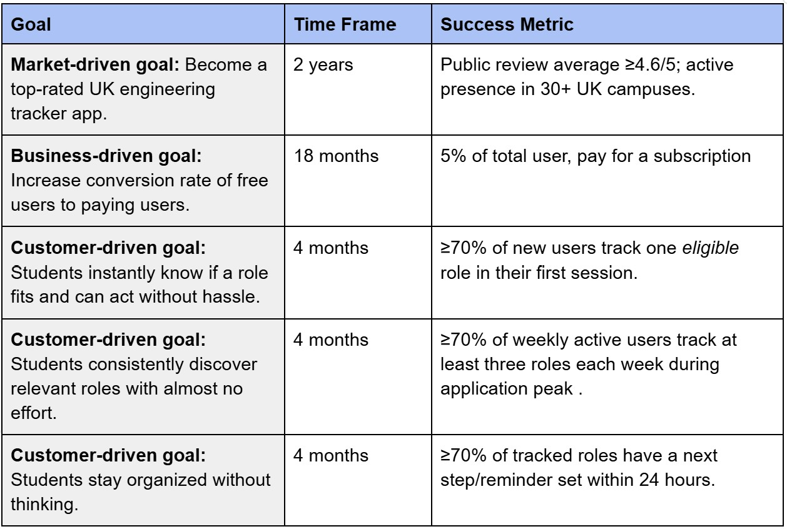
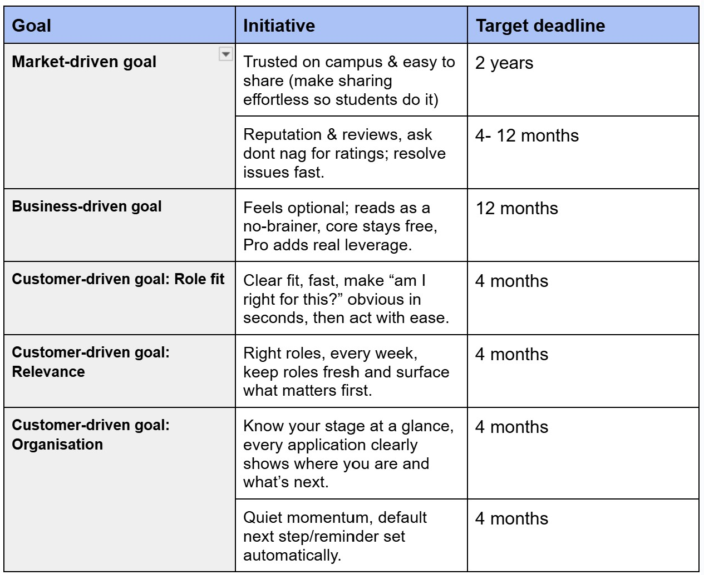
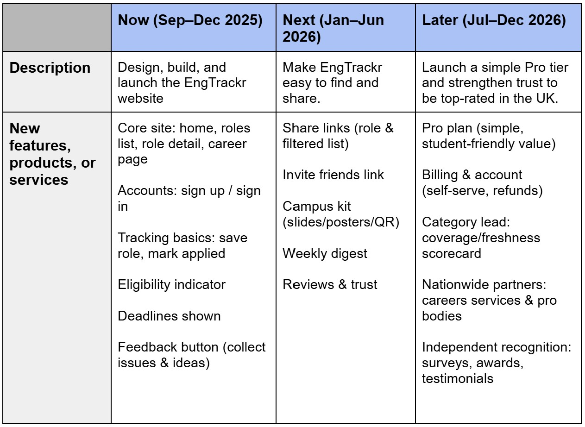

Make job hunting effortless for engineering students, so they can build the future.
Product vision
EngTrackr exists to make the internship and graduate job-finding process a stress-free experience for engineering students. It replaces deadline chaos with timely clarity so students spend less time on admin and more on what matters. As well as turning uncertainty into simple, well-timed action. It supports those who struggle with motivation or procrastination and gives early-year students instant confidence about eligibility. Our aim is a fair, achievable path from classroom to first role.
How I found interviewees Step 2
Recruited UK engineering students across all years.
Channels: University societies 8, Engineering group chats 12, Discord/Reddit 6
Interviews completed:26
I ran open-ended interviews with a non-biased, empathetic approach—listening first, using neutral prompts, and avoiding leading questions
(more in the appendix).
Survey highlights
I gathered 50+ survey responses from my engineering degree cohort and university engineering societies.
58% nearly missed at least one deadline
64% wanted eligibility at a glance (year, visa)
Top requests: reminders and a simple table tracker (easy-to-scan listings)
Full sources and calculation notes are in the research appendix.
Market growth
Fan chart showing real enrolment data to 2023/24 and projection bands thereafter.
UK Engineering & Technology student enrolments — historical actuals through 2023/24; projection bands beyond.
Competitive table
Estimated using Similarweb (Jul 2025): market share from Total Visits;
growth from Last Month Change. Traffic figures are seasonal proxies—directional only,
not users or revenue.
Project objectives

Product initiatives

Product roadmap

OKRs
Three objectives with measurable key results.
O1 — Launch V1 that lets students apply end-to-end
Check fit in seconds with Programme, Year, and Discipline filters—no long reads.
Reminder link (add to calendar)
Click Remind to download an .ics file with the closing date—drop it straight into your calendar.
Weekly digest (3 groups)
Monday summary covering Newly open, Closing this week, and Opens next week. One email, clear plan.
Measures & test plan
Plan: run baseline usability tests with 6–8 users on the current prototype, and iterate on any feedback given.
Research appendix (optional deep dive)
How I got interviews (in depth)
To speak with a diverse set of UK engineering students across all years (June–Aug 2025),
I used several channels:
Engineering societies — 8 participants
What: Reached out to society presidents/VPs to promote the study.
How: Asked for posts via Instagram and email lists inviting a short Zoom call about finding internships/grad roles, with a chance to win a £15 gift card. Students emailed within 2 weeks with course, year, and availability (9–5 slots over one week).
Why: Societies include students from every year, giving broad perspectives.
Engineering group chats (Instagram, WhatsApp) — 12 participants
What: Posted a call for volunteers in my cohort’s engineering group chats.
How: Short conversation on application tracking with a £15 gift-card draw; same details as the societies outreach.
Why: Familiar peers provide more candid detail; mix of internship and grad-role seekers.
Discord & Reddit — 6 participants
What: Joined UK engineering/student-career servers and subreddits.
How: Posted in relevant channels and messaged mods to share the invite; offered a £15 gift-card draw; same info as societies outreach.
Why: Added breadth beyond my university—participants from multiple UK institutions.
Overall interviews completed:26 .
Interview questions (open-ended)
The four open-ended questions I asked all participants (with follow-ups as needed):
Current process: “Can you walk me through how you currently find and track internships or graduate roles?”
What works well: “Which parts of your process work well for you? Could you share a recent example?”
Pain points: “Where did it last break down or become frustrating during this process? What happened?”
Wish list: “If you could change one thing about how you find or track roles, what would you change—and why?”
Persona selection (primary & secondary)
Named personas and why they’re prioritised for v1.
Primary — Alex (urgent doer)
Largest addressable segment with the highest urgency. Clear gap in the market for a strong
reminder / calendar flow — many trackers don’t make “set reminder” effortless.
Secondary — Emily (Explorer)
Big discovery/clarity struggle and a market gap; typically strongest in 1st–2nd year, so the pool is smaller than Alex.
Secondary — Ava (Planner)
More established workflows and higher switching costs; often already using something that “works well enough.”